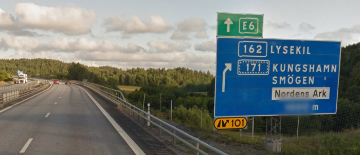

Overnatting
Malmöns Pensionat
Myrvägen 47, 456 55 Bohus-Malmön
Vi har holdt av rom fra Fredag 24. til Søndag 26. på Malmöns Pensionat. Ring hotellet på +46 523 352 10 og bekrefte booking så snart som mulig. Les mer om hotellet her.

Veibeskrivelse
Fra Oslo: Kjør E6 retning Göteborg. Rute.
Fra Göteborg: Kjør E6 retning Oslo. Rute.
Ta av E6 ved Gläborgmotet, ca 45 min. etter norskegrensen. Avfart 101. Skilt mot Lysekil, Kungshamn og Smögen, riksväg 162.
Ta til høyre etter ca 5 min. Skilt mot Nordens Ark, riksväg 171 / Kungshamn riksväg 174.
Ta til venstre etter ca 10 min. Skilt mot Kungshamn S / Malmön / Hovenäset.
Ta til venstre etter ca 1 min. Skilt mot Malmön. Opplevelsen inkluderer en ferge som går 10 og 40 min over hver time ut til øya (gratis), og hver halve og hele time tilbake.
Kjør gjennom Malmöns marina. Følg skilt mot Draget (til høyre, så venstre).
Malmöns pensionat kommer opp på venstre side etter et par minutter (Myrvägen 47).
Ting å gjøre
På lørdag morgen og søndag er det godt med tid for slappe av og nyte den svenske kysten.
Bading på Pärlan
Pärlan er en idyllisk liten strand med havet på to sider. Her er det flott å bade, sole seg og nyte livet. Kart.
{kind=link}
Promenad på Draget
Draget er den sørlige delen av Malmön som byr på utsikt over hele västerhavet. En rundtur gir deg god oversikt over øyen og fin trim etter middagen. Følg Dragsvägen sørover til veien ender og gå en runde på stiene i området. Rute.
Smögen
Smögen er et kjent sommersted med imponerende natur, klipper og hav. Bryggen har en stor samling med restauranger, butikker og caféer. Øyen er bebygd med fine hvite trehus. Rute.
Kirken
Bohus-Malmöns kyrka er opprinnelig oppsatt i Lysekil i 1806. Den ble i 1906 flyttet i sin helhet til Malmön. Kirken ble renovert i 2000, og har i dag plass til 320 personer.
Prestgården ble benyttet som bolig av den lokale presten fram til 1995, og brukes i dag som lokale for fester, kurs og den lokale sopp-lunchen.